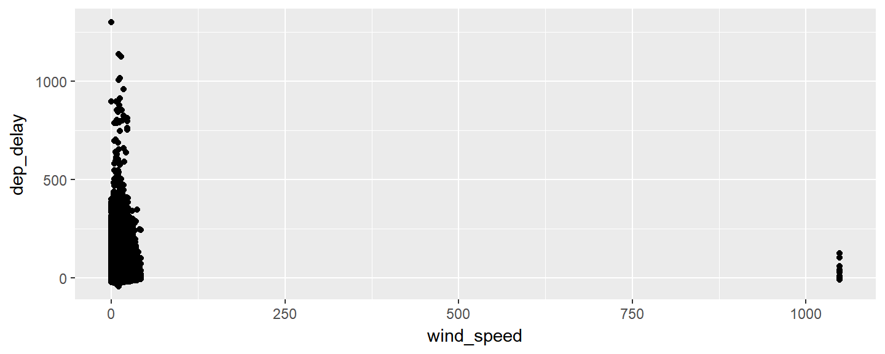
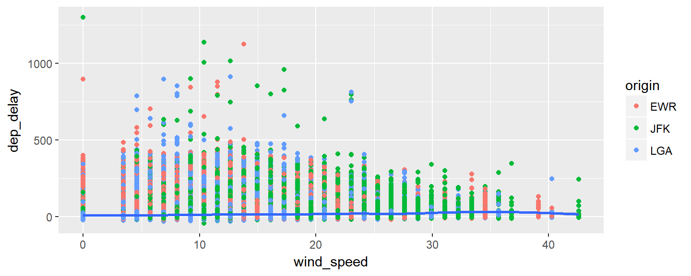
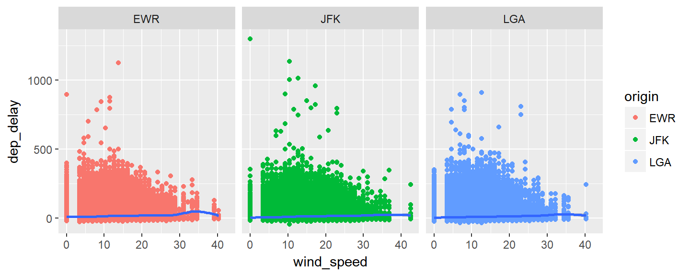
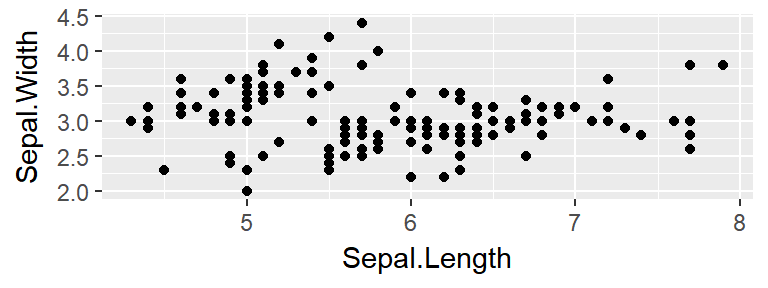

May 10, 2017
Motivation
Do the Right Thing
Love, don't hate, your data analysis


By way of introduction
- My name is Tahir and I am
- a doctoral candidate in Urban Education,
- learned my first programming language (Pascal) in the summer of 1996,
- studied computational linguistics in college,
- began programming Python in 2005 at my first real job,
- began using R in 2009,
- moved to Python (and Pandas) for data analysis because I hated R,
- but experimented with R again after many years this past December,
- and now I have seen the error of my ways.
Data analysis, brought to you by the letter R

By way of introduction (cont.)
Analysis of data?
"Procedures for analyzing data, techniques for interpreting the results of such procedures, ways of planning the gathering of data to make its analysis easier, more precise or more accurate, and all the machinery and results of (mathematical) statistics which apply to analyzing data." (John W. Tukey, 1961)
What is R?
R is a language and environment for statistical computing and graphics
New Zealand is for loveRs
Where did it come from?
R was created by two New Zealand academics named Ross and Robert and released in 1995
Is R only for Kiwis?
Though it seems to help (e.g., Hadley Wickham, more on him later), the benefits of R are universal, transcultural, and, possibly, transhistorical.
A schematic view for us analysts of data

r4ds.had.co.nz
This workshop covers all but the Model stage but we will definitely explore data.
Why you use R
Or should, if you are not already
- Because it is open source and free, unlike Stata, SAS, SPSS, etc.
- Very good documentation and lots of help through Stack Overflow
- Pretty graphics with the
ggplot2package install.packages()many other packages from the Comprehensive R Archive Network (CRAN)
But most importantly
- Fascism lost so you don't have to settle for Excel

Battle of Berlin, May 1945
How not to teach R
Garrett Grolemund of RStudio has enumerated principles we will follow:
- Do not teach R as if it were a programming language: empower students to use R for data science
- Do not avoid the lecture: convey large amounts of information in a short period of time
- Do not let your workshop become a consulting clinic for installation bugs: provide a classroom RStudio Server for students to use
Basics for data analysis
Welcome to the tidyverse
library(tidyverse)

The tidy data way

Importing data
Use readr and readxl packages
readr::read_csv('https://data.ny.gov/api/views/28gk-bu58/rows.csv?accessType=DOWNLOAD')
download.file('http://www.equality-of-opportunity.org/data/college/mrc_table1.xlsx',
destfile = 'mrc_table1.xlsx',
method='curl')
readxl::read_excel('mrc_table1.xlsx')
Load up sample data
library(nycflights13) flights[1:5,]
## # A tibble: 5 × 19 ## year month day dep_time sched_dep_time dep_delay arr_time sched_arr_time arr_delay carrier flight tailnum origin dest air_time distance hour minute time_hour ## <int> <int> <int> <int> <int> <dbl> <int> <int> <dbl> <chr> <int> <chr> <chr> <chr> <dbl> <dbl> <dbl> <dbl> <dttm> ## 1 2013 1 1 517 515 2 830 819 11 UA 1545 N14228 EWR IAH 227 1400 5 15 2013-01-01 05:00:00 ## 2 2013 1 1 533 529 4 850 830 20 UA 1714 N24211 LGA IAH 227 1416 5 29 2013-01-01 05:00:00 ## 3 2013 1 1 542 540 2 923 850 33 AA 1141 N619AA JFK MIA 160 1089 5 40 2013-01-01 05:00:00 ## 4 2013 1 1 544 545 -1 1004 1022 -18 B6 725 N804JB JFK BQN 183 1576 5 45 2013-01-01 05:00:00 ## 5 2013 1 1 554 600 -6 812 837 -25 DL 461 N668DN LGA ATL 116 762 6 0 2013-01-01 06:00:00
Pipe it like it's hot

- a pipe is expressed by
%>%from themagittrpackage - clearly expresses a sequence of operations
- even more powerful when used as part of
tidyverse
Selecting and transforming data
flights %>%
mutate(date = sprintf('%d-%.2d-%.2d', year, month, day)) %>%
select(date, air_time, distance) %>%
separate(date, "-", into=c("year", "month", "day"), remove=FALSE) %>%
head(5)
## # A tibble: 5 × 6 ## date year month day air_time distance ## <chr> <chr> <chr> <chr> <dbl> <dbl> ## 1 2013-01-01 2013 01 01 227 1400 ## 2 2013-01-01 2013 01 01 227 1416 ## 3 2013-01-01 2013 01 01 160 1089 ## 4 2013-01-01 2013 01 01 183 1576 ## 5 2013-01-01 2013 01 01 116 762
Filtering and ordering data
flights %>% filter(day < 8) %>% arrange(-air_time,distance) %>% select(carrier, flight, air_time, distance) %>% head(5)
## # A tibble: 5 × 4 ## carrier flight air_time distance ## <chr> <int> <dbl> <dbl> ## 1 HA 51 691 4983 ## 2 HA 51 679 4983 ## 3 HA 51 671 4983 ## 4 UA 15 665 4963 ## 5 UA 15 664 4963
Tidying your data
- The "tidy" principle is one observation per row and one variable per column
- But data is often not organized the way your analysis requires
Tidying example: what you get
table4a
## # A tibble: 3 × 3 ## country `1999` `2000` ## * <chr> <int> <int> ## 1 Afghanistan 745 2666 ## 2 Brazil 37737 80488 ## 3 China 212258 213766
Tidying example: what you wanted
table4a %>% gather(`1999`, `2000`, key = "year", value = "cases")
## # A tibble: 6 × 3 ## country year cases ## <chr> <chr> <int> ## 1 Afghanistan 1999 745 ## 2 Brazil 1999 37737 ## 3 China 1999 212258 ## 4 Afghanistan 2000 2666 ## 5 Brazil 2000 80488 ## 6 China 2000 213766
If you had many columns to gather, the following is equivalent:
table4a %>% gather(-country, key = "year", value = "cases")
Let's get statistical
flights %>% summarise(max(air_time, na.rm=TRUE))
## # A tibble: 1 × 1 ## `max(air_time, na.rm = TRUE)` ## <dbl> ## 1 695
flights %>%
summarise(avg_time = mean(air_time, na.rm=TRUE),
avg_speed = mean(distance/air_time, na.rm=TRUE))
## # A tibble: 1 × 2 ## avg_time avg_speed ## <dbl> <dbl> ## 1 150.6865 6.571228
Get it together: weather
weather %>% filter(origin == 'EWR') %>% head(5)
## # A tibble: 5 × 15 ## origin year month day hour temp dewp humid wind_dir wind_speed wind_gust precip pressure visib time_hour ## <chr> <dbl> <dbl> <int> <int> <dbl> <dbl> <dbl> <dbl> <dbl> <dbl> <dbl> <dbl> <dbl> <dttm> ## 1 EWR 2013 1 1 0 37.04 21.92 53.97 230 10.35702 11.91865 0 1013.9 10 2012-12-31 19:00:00 ## 2 EWR 2013 1 1 1 37.04 21.92 53.97 230 13.80936 15.89154 0 1013.0 10 2012-12-31 20:00:00 ## 3 EWR 2013 1 1 2 37.94 21.92 52.09 230 12.65858 14.56724 0 1012.6 10 2012-12-31 21:00:00 ## 4 EWR 2013 1 1 3 37.94 23.00 54.51 230 13.80936 15.89154 0 1012.7 10 2012-12-31 22:00:00 ## 5 EWR 2013 1 1 4 37.94 24.08 57.04 240 14.96014 17.21583 0 1012.8 10 2012-12-31 23:00:00
Get it together: weather and flights
flightsweather <- flights %>%
left_join(weather, by = c("origin", "year", "month", "day", "hour")) %>%
select(origin, dep_delay, wind_speed)
flightsweather %>%
head(5)
## # A tibble: 5 × 3 ## origin dep_delay wind_speed ## <chr> <dbl> <dbl> ## 1 EWR 2 NA ## 2 LGA 4 NA ## 3 JFK 2 NA ## 4 JFK -1 NA ## 5 LGA -6 13.80936
Explore by visualizing
flightsweather %>%
ggplot(aes(x=wind_speed, y=dep_delay)) +
geom_point()

More than just pretty graphics
flightsweather %>%
filter(wind_speed < 250) %>%
ggplot(aes(x=wind_speed, y=dep_delay)) +
geom_point(aes(color = origin)) +
geom_smooth()

Exploring groups of data as facets
flightsweather %>%
filter(wind_speed < 250) %>%
ggplot(aes(x=wind_speed, y=dep_delay)) +
geom_point(aes(color = origin)) +
geom_smooth() +
facet_wrap(~ origin)

Let's hit the gym
First, stretch
Take a five minute break.
Proper gym equipment
RStudio
- Turn on your computers
- Connect to gcdf WiFi network with password provided
- Open your web browser to web address provided
- Login with user and password provided
- Create New Session
Using the free weights
The R Console
sessionInfo()
R version 3.4.0 (2017-04-21) Platform: x86_64-pc-linux-gnu (64-bit) Running under: Debian GNU/Linux 8 (jessie) Matrix products: default BLAS/LAPACK: /usr/lib/libopenblasp-r0.2.12.so locale: [1] LC_CTYPE=en_US.UTF-8 LC_NUMERIC=C LC_TIME=en_US.UTF-8 [4] LC_COLLATE=en_US.UTF-8 LC_MONETARY=en_US.UTF-8 LC_MESSAGES=C [7] LC_PAPER=en_US.UTF-8 LC_NAME=C LC_ADDRESS=C ....
Gym etiquette
Create an R project

- New Project > New Directory > Empty Project
- Enter "[LAST]-[FIRST]" in Directory Name
- Create Project
Lifting log
Start a new R Notebook
An R Notebook is an R Markdown document with chunks that can be executed independently and interactively, with output visible immediately beneath the input (rstudio.com)
- File > New File > R Notebook
--- title: "My Notebook" output: html_notebook ---
What’s your max, bro?
Keeping research reproducible
R Notebooks are a method of literate programming that allows for direct interaction with R while producing a reproducible document with publication-quality output (rstudio.com). This presentation is actually written in R Markdown, so the output of a block of code can be included in the resulting document.
library(ggplot2) data(iris) ggplot(data=iris, aes(x=Sepal.Length, y=Sepal.Width)) + geom_point()
